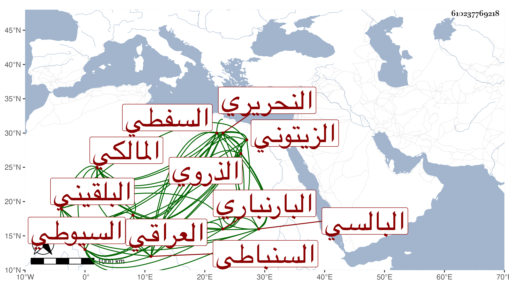

0902Sakhawi.DawLamic.ITO20230111-ara1.EIS1600.610237769218
Biography ID: 610237769218
534
ولي الدين جماعة يسمون أحمد منهم ابن الزين عبد الرحيم بن الحسين أبو زرعة العراقي . وابن تقي الدين محمد بن محمد بن عمر بن رسلان البلقيني . وابن الشهاب أحمد بن عبد الخالق السيوطي . وابن الجمال عبد الله بن محمد بن عيسى الزيتوني . وابن الجمال محمد بن عمر البارنباري . وابن بهاء الدين محمد بن محمد بن محمود البالسي . وجماعة يسمون محمدا منهم ابن أحمد بن محمد بن أحمد الذروي . وابن أحمد بن يوسف بن حجاج السفطي . وابن محمد بن عبد اللطيف السنباطي . وابن محمد بن محمد بن عبد الله بن أحمد بن الزفتاوي . وابن فتح الدين محمد بن محمد النحريري المالكي . وابن أبي القسم بن عبد الرحمن .
